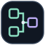
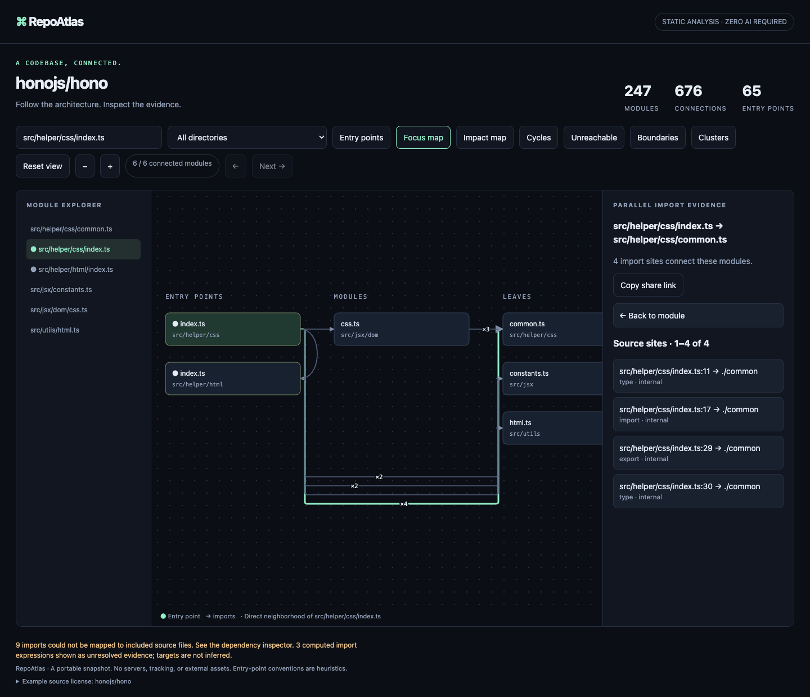

Find a module, export, or import
Search the map by path, exported name, imported name, or local alias. Matching bindings and their source lines appear with each module.

RepoAtlasRepoAtlas turns unfamiliar code into a map you can check. Click an edge to open the import line behind it.

Paste a public TypeScript URL or choose a private local folder. The same source-backed map works in your browser, with no project upload.
Public URL or private local folder · TypeScript · up to 1,200 files · 25 MB total · 1 MB per file
Preparing analysis…
Source files are fetched directly from GitHub and analyzed on this device. The TypeScript compiler is loaded from jsDelivr’s version-pinned TypeScript package; it receives no repository data. GitHub’s public API limits unauthenticated requests to 60 per hour per IP. Large repositories work best with the local CLI.
Prefer a local map? Build a command and run it on your machine.
Three real projects, analyzed at fixed commits so the module counts and source evidence are reproducible.
Static evidence from the files in the repository. Runtime behavior stays out of scope.
Search the map by path, exported name, imported name, or local alias. Matching bindings and their source lines appear with each module.
Walk from a detected entry through each import, with the exact source line highlighted at every stop. Explore reachability, cycles, external packages, and change impact.
Resolve declared npm, Yarn, and pnpm workspaces through package exports. Start with a ranked package overview, drill in, or inspect each contributing source line.
Opt into a bounded Git history window to compare committed change activity across modules. RepoAtlas shows the period, per-file counts, and last changed date without assigning a quality or risk score.
Generate a downloadable HTML diff from the base commit and PR revision. Changed modules trace back to detected entries through source-linked imports, alongside added or removed bindings and exports; the workflow needs read-only access. Explore an interactive sample.
Connect over MCP to search modules, public exports, or imported names and aliases, or get bounded module evidence and an entry path. Results include exact source lines; analysis stays local.
Export a small, deterministic SVG card with module, entry-point, import, and cycle counts. A pinned workflow can propose refreshes as pull requests.
Share one offline HTML map, an architecture diff, a boundary matrix, or enforced rules in GitHub Actions.
Install the RepoAtlas skill in Codex or another supported agent, then connect the local MCP server for reusable, read-only architecture context. Agents can search module names, public exports, or imported names, then fetch imports, exports, and a detected-entry path together with `module_context`.
MCP setup and agent skill →# Agent skill · no project files written
npx skills add maximilianfeix/repoatlas --skill repoatlas --agent codex --yes
# Local MCP process · read-only · no RepoAtlas credentials
npx --yes --package=github:maximilianfeix/repoatlas#v2.25.0 repoatlas-cli mcp /path/to/projectBuild an architecture diff for a pull request, scan its module and import counts in the job summary, then follow each changed import to the exact base or head source line. Add a rule config to annotate violating import lines and files; the HTML artifact stays available if a rule fails. RepoAtlas needs read-only access.
See the complete GitHub Actions setup →# .github/workflows/architecture.yml
- uses: actions/checkout@3d3c42e5aac5ba805825da76410c181273ba90b1 # v7.0.1
- uses: maximilianfeix/repoatlas@v2.25.0
with:
compare-to: ${{ github.event.pull_request.base.sha }}
check-config: repoatlas.config.json
output: architecture-diff.html
artifact-name: architecture-diffBuild a static card from the same evidence as the interactive map. It has no scripts, tracking, or remote requests.
repoatlas-cli https://github.com/owner/repo --activity-days 90 --out activity-map.html
repoatlas-cli https://github.com/owner/repo --json > architecture.json
repoatlas-cli report architecture.json --format card \
--output docs/architecture.svg